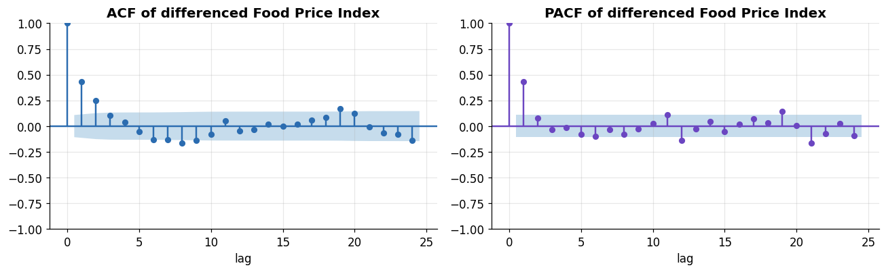
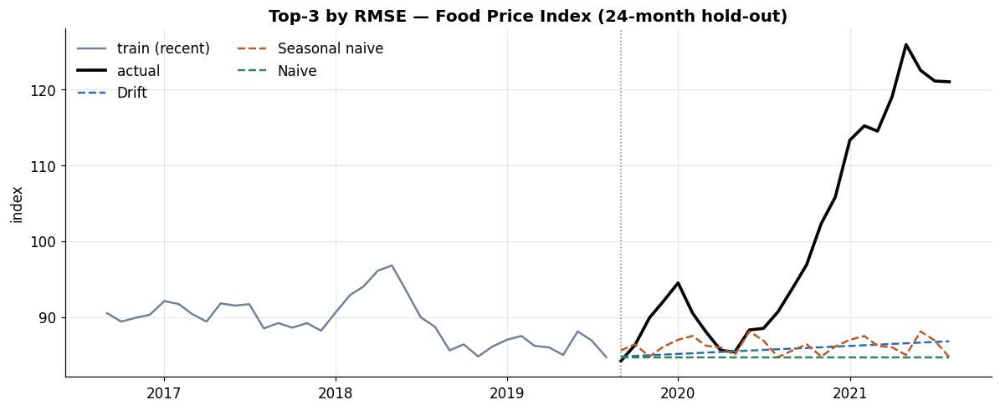

Series:Time Series Analysis in Python — from Statistical Modeling to Machine Learning
Part 3 forecast by smoothing components — level, trend, season. Part 4 takes the other great classical route: model a series’ autocorrelation structure directly. This is the world of AR, MA, ARIMA, and SARIMA — the Box–Jenkins methodology — and it is where the stationarity tests and ACF/PACF reading from Part 2 finally pay off, because they are precisely the tools we use to choose model orders.
What you will learn
The intuition and math of AR, MA, and ARMA processes
How ACF/PACF signatures identify model orders (Box–Jenkins)
ARIMA(p,d,q) — where the “I” (differencing) comes from, and how d is chosen
Order selection by ACF/PACF vs. information criteria (AIC/BIC), and auto_arima
Seasonal ARIMA (SARIMA) and SARIMAX with exogenous regressors
A head-to-head benchmark vs. Part 3’s ETS winner and the baselines
Dataset & continuity
Still monthly_price.csv (356 months, 1992–2021). We forecast the Food Price Index on the same 24-month hold-out as Part 3, so the numbers are directly comparable. Part 3’s automatically selected model was ETS(M,Ad,N), and — a sobering result — the Drift baseline actually won that hold-out because the test window is the 2020–21 price surge. ARIMA now gets its turn.
0. Setup, data, split, and shared helpers
We reuse the exact loading, split, metrics, and baselines from Part 3.
1. The idea: model the autocorrelation, not the components
Where exponential smoothing describes a series by its level, trend, and season, an ARIMA model describes it by how each value relates to its own past values and past shocks. The name unpacks into three ideas:
AR — AutoRegressive: today is a regression on recent past values.
I — Integrated: we model the differenced series, because ARMA requires stationarity (Part 2). The number of differences is d.
MA — Moving Average: today also depends on recent past forecast errors (shocks). (This is a different “MA” from the moving-average smoother of Part 3.)
An ARIMA(p, d, q) model applies an ARMA(p, q) to a series differenced d times. The whole workflow is: difference until stationary → read p and q from the correlograms → fit → check residuals.
2. AR, MA, ARMA — intuition through simulation
The cleanest way to build intuition is to simulate processes with known orders and look at their fingerprints. statsmodels’ ArmaProcess does this. (Note its lag-polynomial sign convention: an AR coefficient φ is entered as [1, -φ].)
AR(1): today regresses on yesterday
\[y_t = \phi\, y_{t-1} + \varepsilon_t\]
φ controls persistence: φ near +1 gives slow, trending drift; a negative φ gives rapid oscillation. The ACF of an AR(1) decays geometrically, while its PACF cuts off sharply after lag 1 — because once you account for lag 1, no direct relationship remains at deeper lags.
Read the top row (φ=+0.8): the series drifts, the ACF tails off slowly, and the PACF has a single spike at lag 1. The bottom row (φ=−0.7) oscillates and its ACF alternates sign — but the PACF still cuts off after lag 1. PACF cutoff ⇒ AR order.
This mirror symmetry is the heart of Box–Jenkins identification:
Process
ACF
PACF
AR(p)
tails off
cuts off after lag p
MA(q)
cuts off after lag q
tails off
ARMA(p,q)
tails off
tails off
When both tail off, you have a mixed ARMA and lean on information criteria to pin down the orders.
3. Choosing d, then reading p and q from our data
Step 1 — the differencing order d. We difference until the series is stationary, using the ADF test from Part 2. The Food Price Index needs exactly one difference.
ADF p-value, raw : 0.379 -> NON-stationary
ADF p-value, 1st diff : 0.000 -> stationary
=> choose d = 1
Step 2 — read p and q from the ACF/PACF of the differenced series.
d1 = train.diff().dropna()fig, axes = plt.subplots(1, 2, figsize=(12, 3.8))plot_acf(d1, lags=24, ax=axes[0], color=PALETTE[0], vlines_kwargs={"colors": PALETTE[0]})axes[0].set_title("ACF of differenced Food Price Index")plot_pacf(d1, lags=24, ax=axes[1], method="ywm", color=PALETTE[3], vlines_kwargs={"colors": PALETTE[3]})axes[1].set_title("PACF of differenced Food Price Index")for a in axes: a.set_xlabel("lag")plt.tight_layout(); plt.show()

The PACF cuts off sharply after lag 1 (only lag 1 clears the band) while the ACF tails off over a few lags — the classic AR(1) signature. Applied to the once-differenced series, that reads as a tentative ARIMA(1, 1, 0). This is our ACF/PACF-identified candidate; next we let information criteria second-guess it.
4. Fitting an ARIMA model
We fit the identified ARIMA(1,1,0) with statsmodels and read the summary — coefficients, and the AIC/BIC we’ll use for selection.
The lone AR(1) coefficient is positive and highly significant, consistent with the momentum we saw. AIC/BIC appear at the top — lower is better. Let’s produce a forecast with a prediction interval; the ARIMA state-space form gives these analytically via get_forecast.
Like the ETS forecast in Part 3, the point forecast is nearly flat (a differenced AR(1) has short memory and reverts to a drift), so it too misses the 2020–21 surge — but the interval widens to keep the actual within reach. The interesting question is whether a richer ARIMA does better.
5. Order selection by information criteria
The ACF/PACF gives a principled starting order; information criteria refine it. AIC and BIC both trade goodness-of-fit against the number of parameters; BIC penalizes complexity more heavily, so it tends to pick smaller models. We grid-search over \((p, q)\) with \(d=1\) fixed and rank by AIC.
AIC prefers a richer mixed model than the eye suggested, while BIC picks exactly our parsimonious ACF/PACF candidate, (1,1,0) — its heavier complexity penalty rewards the simpler model. That disagreement is the norm, not a bug: ACF/PACF gives a parsimonious hypothesis, AIC fine-tunes for in-sample fit, BIC guards against over-parameterization. Which one actually forecasts better is an empirical question we settle on the hold-out in Section 10 — so we carry both the AIC winner and the simpler ACF/PACF/BIC pick into that benchmark.
Grid-searching by hand is fine for one series; for many, the pmdarima package’s auto_arima automates it — stepwise-searching \((p,d,q)(P,D,Q)_m\), testing for the differencing orders, and minimizing an information criterion. It is the practical workhorse for order selection.
Here auto_arima confirms our AIC grid winner exactly. In general its stepwise search can diverge slightly from an exhaustive grid, so treat it as a strong default rather than an oracle — always confirm the choice with the residual diagnostics below.
7. Seasonal ARIMA (SARIMA)
SARIMA(p,d,q)(P,D,Q)ₘ adds a seasonal triple plus a seasonal difference at period m — seasonal AR (P), seasonal differencing (D), and seasonal MA (Q) that operate at lags m, 2m, … . For monthly data m = 12, so a seasonal AR term links each month to the same month a year earlier.
Our commodities are only lightly seasonal (Parts 1–2), so we demonstrate SARIMA on Rice price and compare a seasonal specification against its non-seasonal counterpart.
The seasonal terms buy only a small change here — the honest consequence of weak seasonality in this dataset. On strongly seasonal series (electricity demand, tourism, retail) the seasonal triple is decisive, and the mechanics are exactly the same.
8. SARIMAX — adding exogenous regressors
SARIMAX extends the model with exogenous predictors (the “X”): external variables that help explain the target. Economic intuition says energy prices drive food prices (fuel, fertilizer, transport), so we add Energy_Price_Index as a regressor for the Food Price Index.
Adding energy sharply lowers the in-sample AIC and its coefficient is strongly significant — energy genuinely carries information about food prices.
The exogenous-forecasting catch. To forecast with SARIMAX you need the regressor’s future values, which you usually don’t have. Three honest options: (1) use a scenario for the exog, (2) forecast the exog first with its own model, or (3) accept a lag so past exog predicts future target. Below we take a deliberate shortcut — feeding the model the actual future energy values — purely to illustrate the mechanism. This is an oracle forecast and an upper bound on what exog can buy; it is not a fair comparison against the univariate models.
With the actual energy path, SARIMAX improves on every univariate ARIMA/ETS forecast here (RMSE ≈ 21.3 vs ≈ 22.5–23.8) — the right covariate beats a cleverer univariate model. The gain is real but modest, and on this shock-driven window it still doesn’t overtake the drift baseline; the sharp in-sample AIC drop is the clearer evidence that energy carries genuine information. The honest caveat stands: in production you must supply or forecast that covariate — exactly what the multivariate models of Part 5 (VAR) are built to do.
9. Residual diagnostics — did we capture the structure?
A fitted ARIMA is only trustworthy if its residuals are white noise — no leftover autocorrelation, roughly constant variance, approximately normal. If structure remains in the residuals, the model missed something. statsmodels gives a four-panel diagnostic in one call.
Standardized residuals (top-left) — should look like noise around zero. Ours do broadly, but with violent spikes at 2008 and 2020 — the shocks the model can’t explain.
Histogram + KDE vs. N(0,1) (top-right) — the residual density has heavier tails than the normal; extreme months are more common than a normal allows.
Normal Q–Q (bottom-left) — points bend away from the line at the tails, confirming the heavy tails.
Correlogram (bottom-right) — this is the key one: no significant spikes means the model has captured the autocorrelation.
The formal test for that last panel is Ljung–Box (H₀: residuals are independent up to lag k; we want p > 0.05).
If Ljung–Box fails to reject at these lags, the residuals carry no remaining autocorrelation — the model’s mean structure is adequate. The non-normal, heavy- tailed residuals are a different problem: they say the variance is not constant (it explodes during crises). That is conditional heteroscedasticity, and modelling it is exactly the job of GARCH in Part 5. A pragmatic partial fix we already know is to model the log series, which tames the variance.
10. Benchmark — ARIMA vs. Part 3’s ETS vs. baselines
Now the payoff: every serious model on the same 24-month hold-out.
Why we compare on hold-out error, not AIC. An ARIMA with d=1 computes its likelihood on the differenced series, while ETS works on the levels — their AIC values are not comparable. Out-of-sample RMSE/MAE/MAPE, computed identically for every model, is the fair yardstick.
# refit Part 3's ETS winner on the same trainets = ETSModel(train, error="mul", trend="add", damped_trend=True, initialization_method="estimated").fit(disp=False)ets_fc = ets.forecast(H)results = {"Naive": naive,"Seasonal naive": snaive,"Drift": drift,"ETS(M,Ad,N) [Part 3]": ets_fc,"ARIMA(1,1,0) [ACF/PACF]": sf["mean"],f"ARIMA{best_aic_order} [AIC grid]": aic_fc["mean"],f"auto_arima{auto.order}": auto_fc,}board = (pd.DataFrame([score(n, test, f) for n, f in results.items()]) .sort_values("RMSE").reset_index(drop=True))board
model
MAE
RMSE
MAPE%
0
Drift
14.899
20.090
13.29
1
Seasonal naive
14.604
20.141
12.94
2
Naive
15.979
21.270
14.30
3
ARIMA(1,1,0) [ACF/PACF]
17.563
22.550
15.89
4
auto_arima(3, 1, 2)
18.087
22.887
16.44
5
ARIMA(3, 1, 2) [AIC grid]
18.087
22.887
16.44
6
ETS(M,Ad,N) [Part 3]
18.834
23.806
17.12
top3 = board["model"].head(3).tolist()fig, ax = plt.subplots(figsize=(11, 4.6))ax.plot(train.index[-36:], train.iloc[-36:], color=PALETTE[5], label="train (recent)")ax.plot(test.index, test, color="black", lw=2.4, label="actual")for name, c inzip(top3, PALETTE): ax.plot(results[name].index, results[name], color=c, ls="--", label=name)ax.axvline(test.index[0], color="grey", lw=1, ls=":")ax.set_title(f"Top-3 by RMSE — Food Price Index ({H}-month hold-out)")ax.set_ylabel("index"); ax.legend(frameon=False, ncol=2)plt.tight_layout(); plt.show()win = board.iloc[0]base = board[board.model.isin(["Naive","Seasonal naive","Drift"])]["RMSE"].min()print(f"Best overall : {win['model']} (RMSE {win['RMSE']})")print(f"Best baseline RMSE: {base} -> "f"{'a model beats the baselines'if win['RMSE'] < base else'the baseline still wins'}")

Best overall : Drift (RMSE 20.09)
Best baseline RMSE: 20.09 -> the baseline still wins
The honest story mirrors Part 3: on a hold-out dominated by an unforecastable shock, ARIMA and ETS land in the same neighbourhood as each other and near the baselines — because no univariate model can anticipate 2020–21 from the prior data alone. Note too that the parsimonious ARIMA(1,1,0) actually edged out the higher-order AIC pick out-of-sample: lower in-sample AIC did not buy a better forecast, the very reason we validate on held-out data. That is not a defeat; it is the correct diagnosis. The one thing that did move the needle was exogenous information (energy in Section 8) — foreshadowing why we go multivariate next.
11. Exercises
Identify by eye. Difference Wheat_Price once and read its ACF/PACF. Propose a tentative ARIMA order, fit it, and compare its AIC to a grid search.
AIC vs BIC. For Maize_Price, find the AIC-best and BIC-best orders. How far apart are they, and which forecasts the 24-month hold-out better?
SARIMA where it matters. Add a synthetic strong 12-month seasonal wave to a crop series, then show SARIMA decisively beats plain ARIMA on it.
Forecast the exog honestly. Redo Section 8 but forecast Energy_Price_Index with its own auto_arima first, then feed that into SARIMAX. How much of the oracle’s advantage survives?
Diagnostics. Fit ARIMA to the log Food Price Index and compare the residual Q–Q plot and Ljung–Box to the raw-scale model. Did logging help the heavy tails?
ARIMA models autocorrelation directly: AR = past values, MA = past shocks, I = differencing to reach stationarity.
Box–Jenkins identification: PACF cutoff ⇒ AR order; ACF cutoff ⇒ MA order; both tail off ⇒ mixed ARMA. This makes Part 2’s correlograms the order-picking tool.
Choose d with a unit-root test, then read p, q from the differenced series’ ACF/PACF as a starting order; refine with AIC/BIC (BIC favours simpler models) and confirm with auto_arima.
SARIMA adds a seasonal triple at lag m; SARIMAX adds exogenous regressors — powerful, but you must supply the regressor’s future values.
Residual diagnostics are non-negotiable: Ljung–Box for leftover autocorrelation, Q–Q/histogram for normality. Heavy-tailed residuals signal conditional heteroscedasticity → GARCH (Part 5).
On this shock-driven hold-out, ARIMA ≈ ETS ≈ baselines; the decisive gain came from an exogenous driver — the motivation for going multivariate.
What’s next — Part 5: Advanced Statistical & Multivariate Models
Part 5 broadens the toolkit: ARCH/GARCH for the changing variance we just diagnosed, state-space models and the Kalman filter, and genuinely multivariate methods — VAR/VARMAX, cointegration and VECM, Granger causality — plus Prophet as a decomposable additive alternative. That is where “energy helps food” becomes a model we can actually deploy.